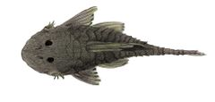
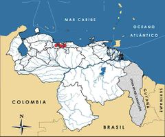

Chaetostoma pearsei
| Corroncho del lago de Valencia | |
|---|---|
|  | |
| Riesgo de extinción | |
 En peligro (UICN) | |
| Clasificación científica | |
| Reino: | Animalia |
| Filo: | Chordata |
| Clase: | Actinopterygii |
| Orden: | Siluriformes |
| Familia: | Loricariidae |
| Género: | Chaetostoma |
| Especie: | Chaetostoma pearsei |
| Nombre binomial | |
|
Chaetostoma pearsei Eigenmann, 1920 | |
| Distribución | |
|
 Mapa de distribución de Chaetostoma pearsei | |
Contenido
Taxonomía
Información de Evaluación
- Categoría y Criterio Regional: En Peligro B1ab(iii)
- Fecha de Evaluación Regional: 2015
- Evaluadores: Jesús Morales-Campos y Ariany García-Rawlins
- Categoría y Criterio Global: No Evaluado
Justificación
Evaluaciones Previas
1999: No Evaluado (NE)
2008: En Peligro (EN)
Información General
Nombres comunes
Corroncho del lago de Valencia, corroncho del Tuy, corroncho de puntos blancos, «L187», Valencia Lake armored catfish, white spot bulldog pleco, white spot rubbernose.
Notas taxonómicas
Sinónimos
Descripción
Bagre loricárido de tamaño pequeño que mide 10 cm máximo de longitud estándar (desde la punta del hocico hasta la base de la aleta caudal). De aspecto similar a otros corronchos, posee el cuerpo cubierto por placas óseas a excepción del vientre. La boca es grande en posición ínfera formando ventosa con los labios, y tiene ojos muy separados entre sí. Es muy característico en este pez que en épocas reproductivas su hocico adquiera una apariencia gomosa que le ha valido su nombre en inglés de «rubber nose». Su coloración es gris parduzca muy oscura con manchas más claras y pequeños puntos blancos en las aletas, dorso y cabeza, y una sombra negra en la base de la membrana entre la espina y el primer radio dorsal. Esas motas están ausentes en las membranas interradiales de la aleta dorsal. Es muy parecida a Chaetostoma guairense, de la cual se diferencia por la aleta pectoral más larga, entre otras particularidades. Los locales no distinguen a estas especies, identificándolas como una sola (Fernández-Yépez 1945, Ceas y Page 1996).
Distribución
Es endémica de Venezuela. Se le reporta específicamente en la faja montañosa meridional de la Cordillera de la Costa. A pesar de su nombre común, se encuentra tanto en la cuenca del lago de Valencia, en los estados Aragua y Carabobo (ríos El Castaño, Tapatapa, Guacara, Ereigüe, Cura y Aragua), como en la cuenca del río Tuy, en los estados Miranda y Aragua (río Tácata, quebrada Cagüita–Sistema río Mesia), aunque la confunden con frecuencia con Chaetostoma guairense, la cual es simpátrica en algunas localidades con este corroncho (Fernández-Yépez 1945, Ceas y Page 1996, Lasso y Rojas 2005). De modo continuo se le menciona como Chaetostoma pearsi y en algunos casos se cita con el nombre de «L187» (loricáridos que esperan ser identificados).
- Sistema: Dulceacuícola
- Bioregión:
- Intervalo altitudinal (m): Temporalmente sin información
- Endémica: Sí
Situación
La biología y situación poblacional de esta especie es muy poco conocida, aunque quizás sea similar a la de otras del mismo género (Fernández-Yépez 1945, Ceas y Page 1996). Está presente en una extensión de 1026,62 km2, y habita en las dos cuencas más amenazadas, contaminadas e intervenidas de la región central (Tuy y lago de Valencia). En general es escasa en la mayoría de sus localidades y ha desaparecido en algunas, siendo confirmada su extinción en el río Taguaza donde fue reportada en 1966. Es conocido asimismo que en el Urva ha decrecido significativamente, aunque en las cabeceras de los ríos Tácata y Mesia aún mantiene poblaciones importantes (Ceas y Page 1996, Lasso y Rojas 2005).
- EOO (km2): 1026,62
- AOO (km2): Temporalmente sin información
- Tendencia Poblacional: Desconocida
Amenazas
Enfrenta las mismas amenazas señaladas para las cuencas del Tuy y el lago de Valencia, que incluyen la destrucción total o modificación de su hábitat, causada, entre otros fenómenos, por el desarrollo urbano, rellenos sanitarios o basureros, interrupción y encauzamiento de las quebradas para la construcción de carreteras y represas, extracción de arenas, contaminación industrial y doméstica de los cursos de agua e introducción de especies exóticas. Chaetostoma pearsei presenta una sensibilidad alta a estas intervenciones por sus requerimientos de aguas muy oxigenadas, transparentes, con corrientes fuertes (Lasso y Rojas 2005). Es utilizada de modo local para el consumo humano en los populares «sancochos», y se conoce con certeza su captura y comercialización como pez ornamental para acuarios, donde en algunos casos se identifica como «L187» (del cual se ha logrado producir una variedad albina blanco puro), aunque no se ha investigado el impacto de estas tensiones sobre el corroncho.
Conservación
Carece de cualquier tipo de protección específica, salvo que en ciertas partes de su área de distribución (ríos Grande y Santa Cruz) sus poblaciones están ubicadas dentro del parque nacional Guatopo. La cuenca del lago de Valencia está protegida como «Área Crítica con Prioridad de Tratamiento», y posee un Plan de Ordenamiento y Reglamento de Uso y normas técnicas para el control de la calidad del agua (Venezuela 1979, 1999, 2000). Además, el Ministerio de Ecosocialismo y Aguas (previamente Ministerio del Ambiente), adelanta un programa de saneamiento con actividades de investigación, educación ambiental, construcción de plantas de tratamiento de aguas residuales y establecimiento de reglas que velen por la calidad de los cursos hídricos. Sin embargo, las acciones emprendidas no han sido suficientes ni efectivas. Recientemente, en un estudio detallado sobre el patrón de distribución geográfica de Chaetostoma pearsei y la evaluación del estado de sus poblaciones, se han propuesto varias medidas para su resguardo, que son básicamente las mismas que para otras especies amenazadas de la cuenca del río Tuy, con énfasis en la protección de quebradas y ríos prioritarios (Las Islitas, Yaguapa, Salmerón, Chuspita y Cagüita). También se han recomendado ensayos de conservación en cautiverio y su reintroducción en áreas de su distribución original que mantengan condiciones ambientales adecuadas (Lasso y Rojas 2005).
Autorías
Autores originales
Carlos A. Lasso, Carlos DoNascimiento y Juan C. Rodríguez
Colaboradores
Ilustrador
Ximenamaria Rausseo
Referencias
- Ceas, P. A. y Page, L. M. (1996). Chaetostoma yurubiense (Teleostei: Siluriformes), a new species of loricariid catfish from the Aroa, Urama, and Yaracuy River systems in Venezuela. Copeia 1996(3): 671-677.
- Fernández-Yépez, A. (1945). Un nuevo loricárido para Venezuela. Descripción de un ejemplar de Loricariidae, colectado en el río Encantado, afluente del río Tuy por medio del río Grande. Memoria de la Sociedad de Ciencias Naturales La Salle 14: 2-20.
- Lasso, C. A., DoNascimiento, C. y Rodríguez, J. C. (2015). Corroncho del lago de Valencia, Chaetostoma pearsei. En: J.P. Rodríguez, A. García-Rawlins y F. Rojas-Suárez (eds.) Libro Rojo de la Fauna Venezolana. Cuarta edición. Provita y Fundación Empresas Polar, Caracas, Venezuela. Recuperado de: animalesamenazados.provita.org.ve/content/corroncho-del-lago-de-valencia Mié, 09/05/2018 - 12:42
- Lasso, C. A. y Rojas, H. (2005). Evaluación del estado actual de conservación de siete espeecies de peces amenazadas en la cuenca del río Tuy, estados Aragua y Miranda. Informe presentado a la Iniciativa de Especies Amenazadas (IEA-Provita). Caracas, Venezuela. 59 pp.
- Rodríguez, J. P. y Rojas-Suárez, F. (1999). Libro Rojo de la Fauna Venezolana, segunda edición. PROVITA, Fundación Polar. Caracas. 444 pp.
- Rodríguez, J. P. y Rojas-Suárez, F. (Eds.) (2008). Libro Rojo de la Fauna Venezolana, tercera edición. Provita y Shell Venezuela, S. A. Caracas, Venezuela. 364 pp.
- Venezuela. (1979). Presidencia de la República. Decreto Nº 304 del 20/09/79: Área crítica con prioridad de tratamiento de la cuenca hidrográfica del lago de Valencia. En: Gaceta Oficial Nº 31.829 (26 sep. 1979). Caracas, Venezuela.